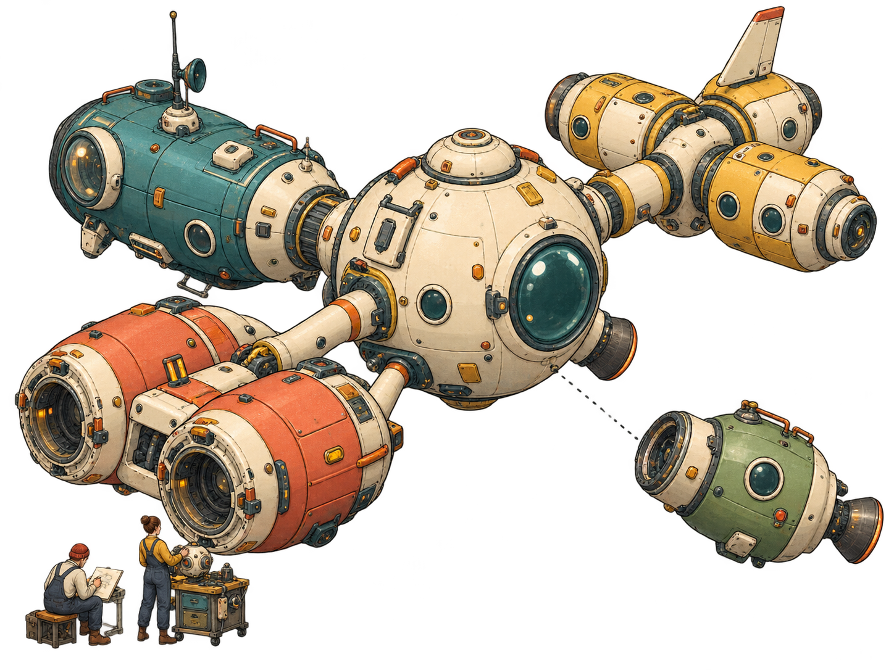

Ядро держит общие правила
Границы и порядок работы, которые действуют во всех проектах. Оно небольшое и целиком помещается в одну папку.
.agents/Выпуск 0.2.0 · файловый фреймворк · MIT
Союз-Аполлон (С-А) — файловый фреймворк для работы с несколькими ИИ-клиентами. Одна папка, общие правила для всех клиентов, а у каждого проекта — свои правила и своя история Git.
Начните проект в одном клиенте — закончите в другом.
Windows 11 Python 3.11+ Git обычные файлы Markdown
Клиенты выпуска 0.2.0

Границы и порядок работы, которые действуют во всех проектах. Оно небольшое и целиком помещается в одну папку.
.agents/У проекта свои правила и своя история Git. Один остановился — остальные работают дальше.
projects/Здесь будут жить системные навыки и их данные. В 0.2.0 навыков ещё нет — только каркас.
system-projects/Во входящие вы кладёте материалы, из исходящих забираете результаты. Крупные файлы лежат отдельно.
port/inbox/ · port/outbox/ · port/large-files/Старые материалы лежат вне установки. Агенты открывают их только по вашей прямой команде.
папка рядом с установкойЛист 2 / Зачем
Знакомый момент: подписка закончилась, лимит исчерпан, провайдер недоступен — и всё приходится объяснять сначала.
С-А выносит опору работы из переписки в папку. Цель, правила, решения и их причины лежат в обычных файлах. Вы открываете ту же папку в другом клиенте — и продолжаете.
Проект не привязан к вендору: правила и результаты лежат в папке, а не в чате.
Если траты на API вам недоступны, а подписки есть, проекты можно вести в нескольких клиентах параллельно. Как работа с несколькими провайдерами — только скромнее и для частных случаев.
Это обычный Markdown, который читает человек. Когда вокруг растёт поток сгенерированных документов, такие файлы помогают сохранить контроль: что решено, кем и почему.
С-А ложится на клиент как рабочая одежда: не спорит с его настройками и системными промптами, а работает рядом — через обычные файлы AGENTS.md.
Лист 3 / Устройство
Как на станции: независимые части стыкуются друг с другом и работают и по отдельности, и вместе. Всё устройство — папки и файлы, которые можно открыть и прочитать.
| Поз. | Обозначение | Наименование | Примечание |
|---|---|---|---|
| — | AGENTS.md | Корневые правила | Вход для клиента, открытого в этой папке. Границы записаны здесь целиком. |
| 1 | .agents/ | Ядро | Общие правила, шаблоны, справка. Своя история Git. |
| 2 | projects/ | Ваши проекты | У каждого свой AGENTS.md и свой Git. |
| 3 | system-projects/ | Системные проекты | Системные навыки и их данные. В 0.2.0 навыков пока нет. |
| 4 | port/ | Порт | inbox/ — от вас, outbox/ — для вас, large-files/ — крупные файлы. Без Git. |
| 5 | снаружи, рядом | Архив | Старые материалы вне установки. Агенты открывают их только по вашей прямой команде. |
| — | sa.py | Инструмент | Один файл на Python. Git, проверки и резервные копии. |
Законы федерации и законы штата
Правила устроены как в федерации. В ядре — общие: они действуют везде, и ни один проект их не ослабит. У каждого проекта — свои местные правила, но записаны они по единому стандарту.
Поэтому проекты могут пересекаться, а могут жить врозь. Проект можно скопировать, унести и использовать отдельно.
Пульт
sa.pyЕму нужен только Python. Внешних зависимостей нет.
initcommitdoctorsyncbackuparchiveЛист 4 / Пример
Проект health: план питания на месяц. Начали в одном клиенте, продолжили в другом. Между ними — один файл.
Учебный пример. ИИ не помнит всё сам: преемственность держат файлы проекта, прежде всего handoff.md.
сессия в первом клиенте шаг 1
Вы: На сегодня всё. Запиши передачу по проекту health.
Агент записывает projects/health/handoff.md: цель, что сделано и что нет, ваши решения с датами, открытые вопросы и следующий шаг. Затем коммитит работу через python sa.py commit.
записано в файл
handoff.md шаг 2
сессия в другом клиенте шаг 3
Вы: Продолжаем проект health.
Новый агент читает правила, затем handoff.md — и видит не только следующий шаг, но и причину решения. У него есть записанное основание: можно опереться на него, а не переспрашивать.
Гарантии это не даёт: handoff.md лишь передаёт контекст, а следовать ему или нет, решает клиент. Историю изменений хранит Git проекта.
Лист 5 / Подход
Как в восточных единоборствах. С-А не соревнуется с ИИ-клиентом в том, кто главнее, и не тормозит его. Он встраивается в то, что уже работает: файлы AGENTS.md клиенты и так умеют читать.
Строгость в дисциплине, но мягкость в открытости и эмоциях.
Главное, чтобы в ней было удобно работать — и человеку, и ИИ, и проекту. Своих форматов мы не изобретаем: опираемся на принятые соглашения.
Разработка всё чаще тонет в потоке сгенерированных документов, и управление легко потерять. Здесь правила и решения записаны так, чтобы вы могли прочитать их сами.
Клиент можно сменить, а можно работать в нескольких сразу. Проект, его правила и история остаются в вашей папке.
В июле 1975 года «Союз» и «Аполлон» состыковались на орбите: инженеры двух стран вместе сделали стыковочный узел, который подошёл обоим кораблям. Название — дань уважения этому сотрудничеству Востока и Запада. Здесь оно продолжается по-домашнему: русская инженерная школа, американские и китайские технологии.
Лист 6 / Для кого
От плана питания до постройки автодома: дела разные, структура одна. Проекты пересекаются, только когда это нужно вам.
Несколько сложных проектов, скромный бюджет и желание не зависеть от одного поставщика.
Вы уже привыкли к заметкам в Markdown. Здесь тот же материал — плюс правила, по которым с ним работает ИИ.
В одном проекте физика, в другом химия, третий ведёт конспекты. Каждая тема — в своём модуле.
Одна тема — один проект. Понятно, где что лежит, кто что решил и что делать дальше.
Честно о пороге входа: сейчас С-А для тех, кого не пугают Python, Git и командная строка. Это связано с ранней стадией, а не с запретом для новичков.
Лист 7 / Что работает сейчас
Ниже — таблица фактов, а не обещаний. «Работает с любым агентом» мы не утверждаем: у каждого клиента свой статус.
Правила: по документации производителя, пробой не проверено. Архив: только текст правил. Настройки разрешений вы применяете сами — фрагмент есть в справке установки.
Правила: по документации производителя. Архив: sa.py пишет настройки разрешений, но они действуют, только если папка отмечена доверенной, и пробой пока не проверены.
Проба 31.10.2026, запуск из корня установки: правила загружены, коммит с подписью исполнителя сделан. Архив: настройки от sa.py блокируют встроенное чтение — проверено. Команды оболочки этот запрет не покрывает.
Правила: по документации производителя, не испытан. Архив: только текст правил.
Правила: по документации производителя, не испытан. Архив: только текст правил.
Проверено пробой — есть запись испытания, и только по подтверждённым пунктам. Заявлено — так сказано в документации производителя; сами мы это ещё не испытывали. Режимы и подробности — в файле compatibility.md.
user.name и user.email. Linux и macOS пока не поддерживаются.sa.py. Системные навыки появятся в следующих выпусках.AGENTS.md — это соглашения. Замок ставят настройки разрешений самого клиента, и sa.py пишет их только для Claude Code и Codex.Памятка
sa.py работают на вашем компьютере. Что уходит модели и её провайдеру, решает ваш ИИ-клиент.Лист 8 / Первый запуск
Понадобятся Windows 11, Python 3.11 или новее и Git с заданными user.name и user.email.
На странице выпуска 0.2.0 возьмите файл soyuz-apollo-0.2.0.zip.
Не берите «Source code (zip)» — там исходники, а не установка.
Путь — латиницей, вне OneDrive и вне других репозиториев Git. Например, C:\soyuz-apollo\.
В этой папке выполните python sa.py init.
Именно в ней, а не в проекте внутри. В Codex сначала отметьте папку доверенной.
Создай проект health через python sa.py init health. Цель: вести план питания на месяц. Опиши цель в AGENTS.md проекта и скажи, что сделано.